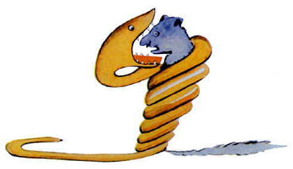
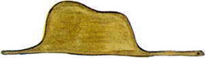
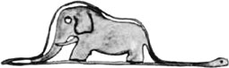
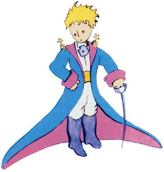

Коли мені було шість років, у книзі під назвою "Правдиві історії", де розповідалося про незаймані ліси, я побачив якось дивовижну картинку. На картинці величезна змія — удав — ковтала хижого звіра. Ось як це було намальовано:

У книжці було написано: "Удав ковтає свою жертву цілою, не прожовуючи. Після цього він не може й ворухнутися, спить собі півроку, аж поки перетравить їжу". Я чимало думав про сповнене пригод життя в джунглях та й собі намалював кольоровим олівцем мій перший малюнок. Малюнок № 1. Ось що я зобразив.

Я показав цей твір дорослим і спитав, чи не лякає він їх. А мені на те: — Чого б то капелюх нас лякав? Але ж то був не капелюх. То був удав, що проковтнув слона. Тоді я зобразив удава в розрізі, аби дорослим було зрозуміліше. Їм завжди треба все тлумачити. Ось мій малюнок № 2.

"Дорослі порадили мені не малювати більше гаддя ні в натурі, ні в розрізі, а краще цікавитися географією, історією, математикою та граматикою. Отак і сталося, що я в шість років зрікся блискучої малярської кар'єри. Зазнавши провалу з малюнками № 1 і №2, я геть зневірився в собі. Дорослі такі нетямовиті, а діти просто не в змозі розжовувати їм усе. Отож я мусив обрати собі інше ремесло, і я навчився керувати літаками.
Я облетів майже цілий світ. I географія, сказати по щирості, стала мені у великій пригоді. Я умів з першого погляду одрізнити Китай од Арізони. То вельми корисно, надто як уночі з курсу зіб'єшся. На своєму віку я зустрічав чимало всяких поважних людей і мав з ними стосунки. Жив довго між дорослих. Бачив їх зовсім близько. I від того моя думка про них не покращала.
Коли мені здибався дорослий, людина ніби-то кмітлива, я поцікавився його думкою про свій малюнок №1, який я беріг. Хотілося знати, чи він справді може второпати. Але дорослий незмінно відповідав мені: "Це капелюх". Тоді я вже не говорив з ним ні про полозів, ні про тропічні ліси, ні про зорі. Я пристосовувався до його тями. Заводив з ним мову про гольф і бридж, про політику і краватки. I дорослий так тішився: познайомитися з такою розважливою людиною.
Так жив я сам-один, не маючи нікого, з ким міг погомоніти-порадитися, аж до аварії, що спіткала мене шість років тому в Сахарі. Почав давати збої двигун мого літака. Ні механік, ні пасажири зі мною не летіли, довелося поратися самому, хоч ремонт був складний. Тут таке: або пан, або пропав. Питної води я мав ледве на тиждень. Отож першого вечора я заснув на піску в пустелі за тридев'ять земель від будь-якої людської оселі. Я був ще самотніший, ніж потерпілий на плоту посеред океану.
Уявіть собі мій подив, коли на зорі мене збудив якийсь чудний голосочок. Він сказав: — Прошу... намалюй мені баранця. — Га? — Намалюй мені баранця... Я скочив, наче мене громом ударило. Старанно протер очі. Пильно роззирнувся навкруг. I побачив дивовижного хлопчика, що поважно мене розглядав.
Ось його найкращий портрет, якого мені пощастило згодом намалювати. Та, звісно, на моєму малюнку він далеко не такий гарний, як був насправді. Не я тут виною. Коли я мав шість років, дорослі відбили у мене охоту до того, щоб стати художником, і я тільки й навчився, що малювати удавів — у натурі та в розрізі.
